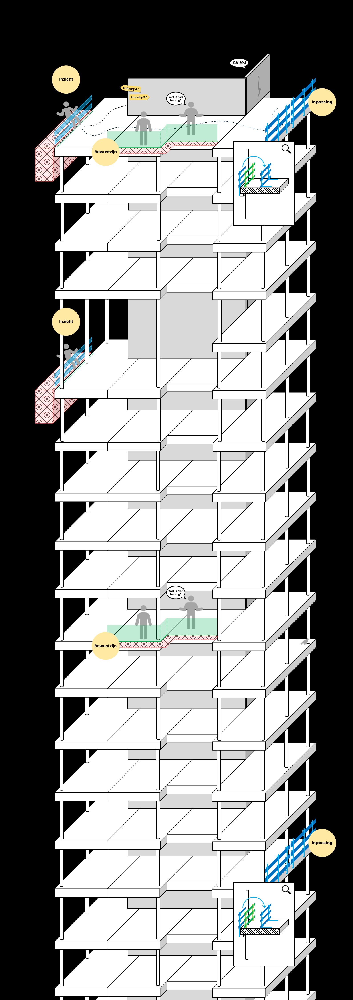

Scan randvalgevaren direct in IFC-modellen en maak veiligheid onderdeel van de voorbereiding.
Bekijk op GitHubRanden behoren tot de grootste valrisico’s op bouwplaatsen. Toch worden ze zelden al inzichtelijk gemaakt in BIM.
Markeert valgevaarzones automatisch
EdgeProtector ondersteunt de Industry 5.0 visie waarin digitale analyse en menselijke expertise samen zorgen voor betere veiligheidsbeslissingen in een vroeg stadium.
EdgeProtector detecteert vloerranden automatisch binnen IFC-modellen.
Openingen en sparingen worden zichtbaar voordat uitvoering start.
Ontwerpers zien direct waar randbeveiliging nodig is.
Menselijke expertise gecombineerd met automatische analyse.

Open een IFC-model
Start EdgeProtector scan
Bekijk direct gemarkeerde risicogebieden
BIM
Aannemers